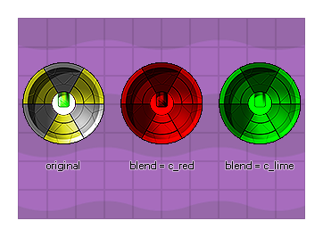

Diese Variable steuert das "Tönen" des Instanz-Sprites. Der Standardwert ist -1 (kann aber auch sein) c_white ). Jeder andere Wert (einschließlich interner Farbkonstanten wie c_red, oder c_aqua ) mischt die angegebene Farbe mit dem ursprünglichen Sprite. Bitte beachten Sie, dass die Instanz, wenn Änderungen in dieser Variablen sichtbar sind, entweder kein Zeichnungsereignis haben sollte (und daher GameMaker Studio 2 standardmäßig das Sprite zeichnet) oder mit einer der erweiterten Zeichnungsfunktionen gezeichnet wird draw_self() oder draw_sprite_ext().  Bitte beachten Sie, dass Sie versuchen sollten, das Mischen auf der HTML5-Plattform einzuschränken (es sei denn, Sie verwenden WebGL), da jedes gemischte Sprite separat zwischengespeichert werden muss und die Verwendung vieler gemischter Sprites die Leistung beeinträchtigen kann (Sie können auch die Cachegröße mithilfe der Funktion festlegen sprite_set_cache_size ).
image_blend;
Real
image_blend = make_colour_hsv(255, 255, random(255));
Der obige Code setzt die image_blend des für die Instanz definierten Sprites auf eine zufällige Farbe.